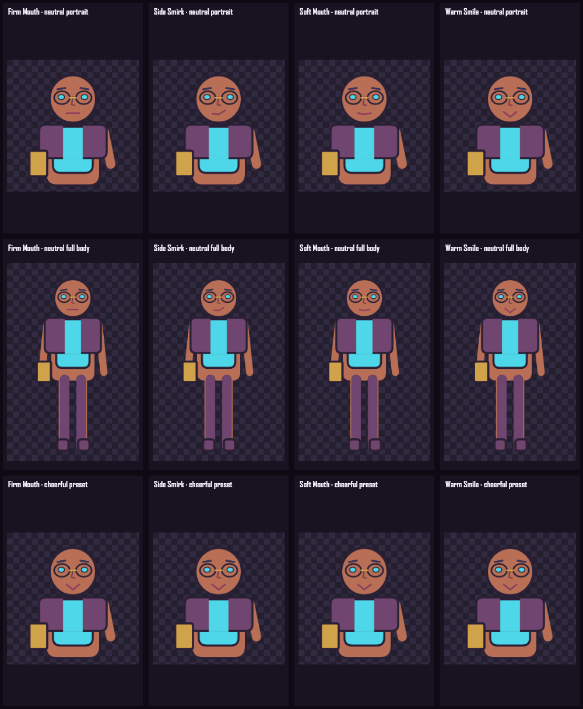

TASK-017 · Selected mouth dominance
Your mouth choice.
Your neutral face.
Each selectable mouth now defines the neutral portrait and full-body mouth. Named expressions remain expression-authored, so “cheerful” keeps one clear emotional meaning whichever neutral mouth was chosen.
Twelve deterministic renders
Four choices across three checks
Top row: neutral portraits. Middle row: neutral full-body renders. Bottom row: the cheerful preset. The four neutral mouths should be visibly distinct; the cheerful row should remain consistent because that named expression intentionally overrides the neutral curve.

Independent decision
Task 017 approval requested
- Confirm Soft, Warm Smile, Firm, and Side Smirk are visibly distinct in neutral portrait output.
- Confirm the same selected mouth remains visible in neutral full-body output.
- Confirm the cheerful row reads consistently as the same named expression.
- Optionally choose mouths in the Studio and switch Portrait ↔ Full body; the equipped choice should remain evident.